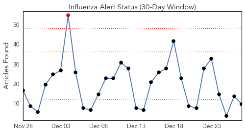
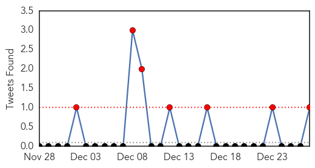
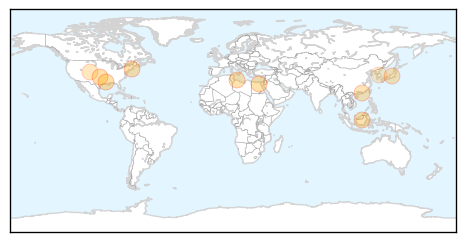
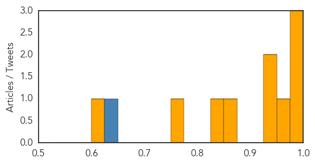

Toggle navigation
Early Warning
Daily Alerts
Influenza
Dec 27, 2014
Compare to:
-
Dengue Fever
Hemmorhagic Fever
Mold/Fungal Infection
Meningitis
Pertussis / Whooping Cough
Middle East Respiratory Syndrome
Cholera
Hepatitis
Chikungunya
Yellow Fever
Bubonic Plague
West Nile Virus
Swine Flu
Ebola
Measles
Unknown
Mumps
30 Day Trends
Web: 1
alerts
, 0
warnings
Twitter: 7
alerts
, 0
warnings
Top Articles:
1.000
Flu season expected to be rough this year
0.984
County and state health officials promote flu shots in Oklahoma
0.981
Libya: 4 H5N1 bird flu deaths reported
0.964
Flu Season in Full Swing in Rhode Island
0.946
4 die of bird flu in Libya
0.942
Four die of bird flu in Libya: minister – BorneoPost Online
0.875
Woman, 68, in critical condition after being diagnosed with bird flu
0.838
Shizuoka hospital influenza outbreak leaves 2 dead, 101 infected ‹ Japan Today
0.757
Craig health briefs for Dec. 27, 2014: Problems encountered enrolling for health insurance; help available at VNA
0.617
S. Korea confirms additional case of avian influenza
Top Tweets:
0.641
RT: Asia HongKong reports 11th imported H7N9 avian influenza case Influenza pandemic alert raised birdflu China http://t…
Web/News Articles

Tweets

Article Locations

Article Confidences
